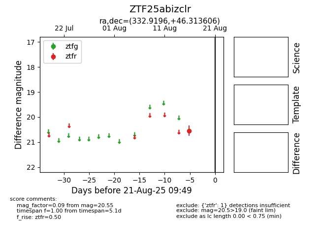

Target ZTF25abizclr at 2025-08-21 09:49, see:
FINK: fink-portal.org/ZTF25abizclr
Lasair: lasair-ztf.lsst.ac.uk/objects/ZTF25abizclr
ALeRCE: alerce.online/object/ZTF25abizclr
alt names
ZTF25abizclr (ztf,alerce)
coordinates:
equatorial (ra, dec) = (332.9196,+46.31361)
galactic (l, b) = (96.3205,-8.13952)
photometry
last ztfr=20.55
1 ztfr detections
